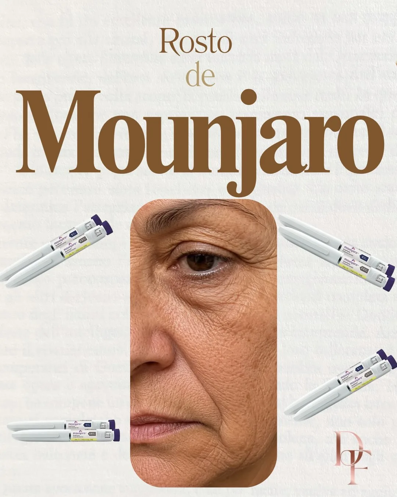
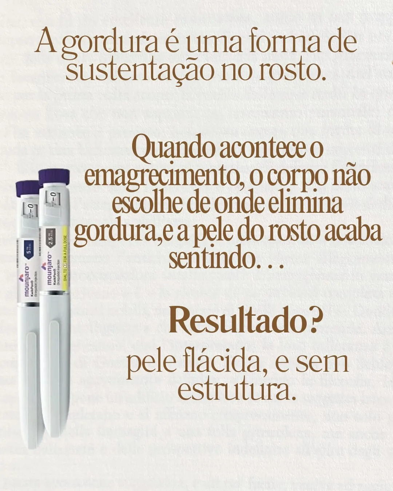
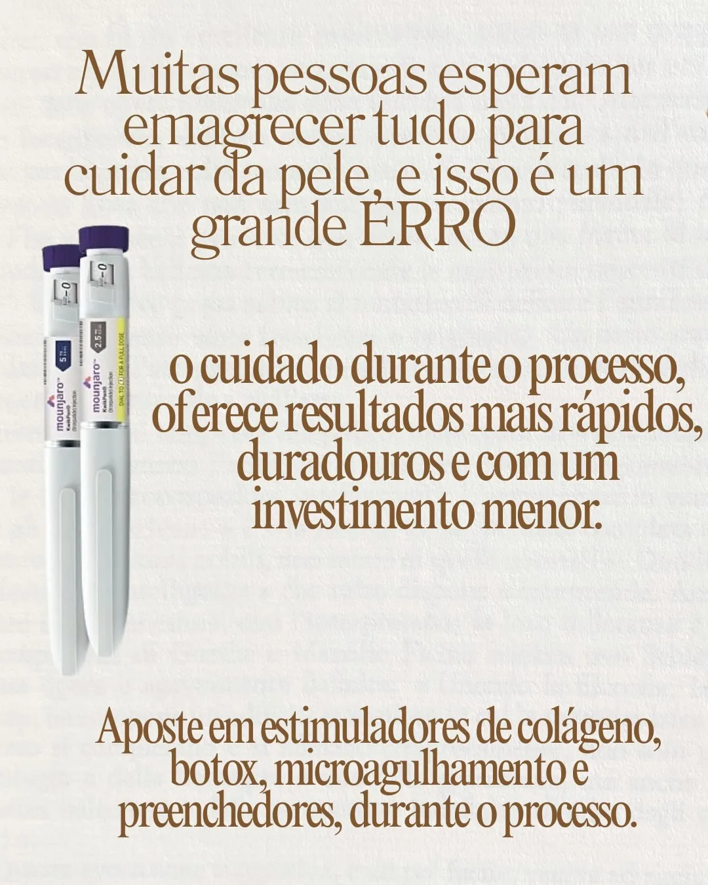
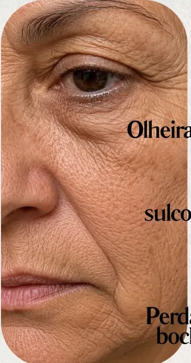
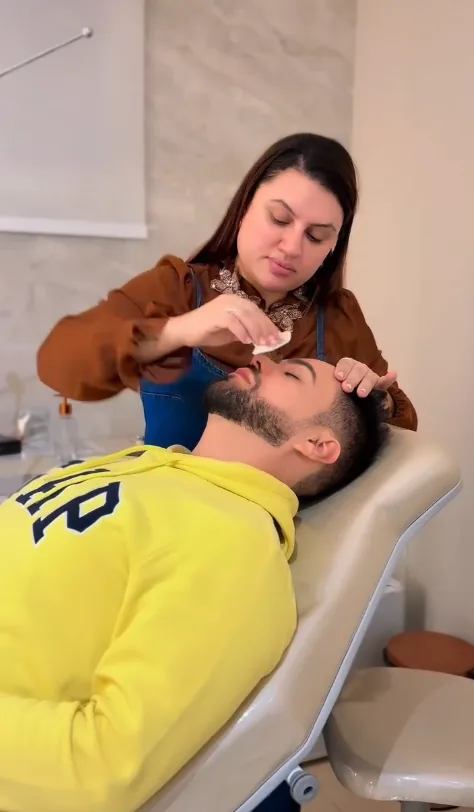
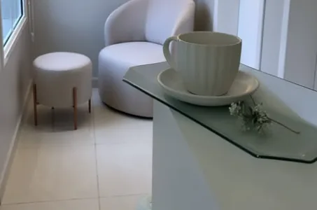
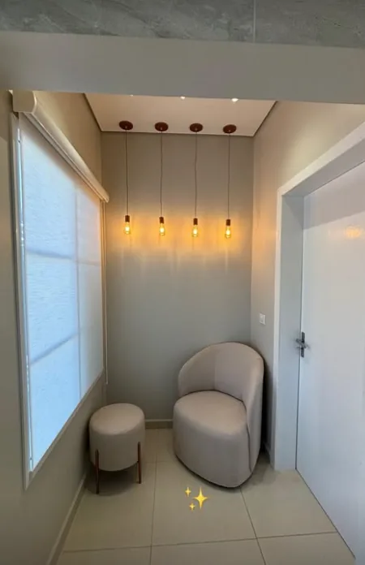
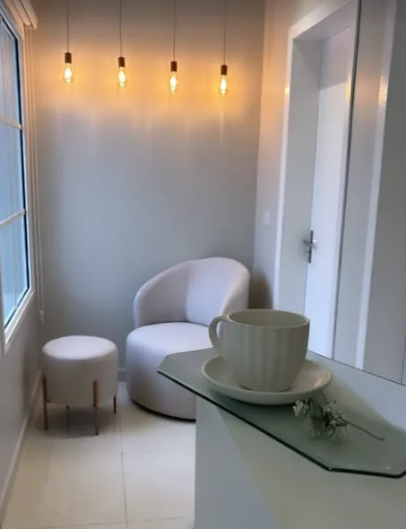

Harmonização facial · Itaporanga-SP
Procedimentos estéticos planejados para o seu rosto, com resultado natural, segurança e a escuta de quem entende que autoestima também é saúde.
Resultado natural, sem exagero
Quando você pensar que estética é futilidade, lembre-se: cuidar de quem você vê no espelho é cuidar de como você se sente no mundo.
Lembre-se
Mapa do rosto
Toque na região do rosto e veja qual tratamento costuma ser indicado para ela.
Indicação mais comum
Avaliar essa regiãoA indicação final é sempre definida na avaliação presencial.
Procedimentos
Linhas de expressão
Suaviza as linhas da testa, entre as sobrancelhas e ao redor dos olhos, mantendo o rosto expressivo. Também previne que novas rugas se marquem.

Lábios
Contorno, hidratação e volume em ml medidos para a proporção do seu rosto. Lábios bonitos que continuam parecendo seus.

Firmeza e flacidez
Estimula o seu próprio organismo a produzir colágeno. A pele ganha firmeza e textura aos poucos, sem mudar seus traços.

Rosto inteiro
Um olhar completo sobre o rosto: equilíbrio entre queixo, mandíbula, maçãs e lábios para realçar o que já é bonito em você.

Pós-emagrecimento
Para quem emagreceu rápido e sentiu o rosto mais flácido, fundo ou cansado. Devolve sustentação e viço ao rosto.

Textura e poros
Microperfurações controladas estimulam a renovação da pele. Melhora poros, manchas, cicatrizes de acne e a qualidade geral da pele.

Corpo e rosto
Redução dos pelos com conforto e praticidade, sem a rotina de lâmina e cera. Com um cafezinho enquanto você espera.

Prazos são médias de referência. Cada organismo responde de um jeito, e tudo é explicado na avaliação.



Em alta
Emagrecer é uma conquista. Só que a perda rápida de gordura também leva embora o volume que sustenta o rosto, e ele pode ficar com aspecto cansado e mais velho.
E não precisa esperar terminar de emagrecer. Cuidar durante o processo traz resultado mais rápido, mais duradouro e com investimento menor.
Quero avaliar meu rosto

Prazer, sou a Day
Sou a Dra. Dayane Fermino e trabalho com harmonização facial em Itaporanga-SP. Para mim, um bom procedimento é aquele que ninguém consegue apontar, mas todo mundo percebe: você descansada, mais confiante e ainda você.
Cada atendimento começa com uma conversa sincera. Eu explico o que faz sentido para o seu rosto, o que não faz e quanto cada etapa custa. Sem pressa e sem empurrar procedimento.
Dayane Fermino
Como funciona
Você conta o que te incomoda e já marcamos o melhor horário.
Analiso proporções, pele e expectativas para entender o rosto como um todo.
Você recebe a indicação, as etapas e o investimento de forma clara.
Atendimento com conforto e segurança, e acompanhamento depois.
Ambiente
Sala de procedimentos


Um cafezinho enquanto você espera
Resultados
Os resultados ficam reunidos em um perfil exclusivo, com fotos publicadas com autorização das pacientes.
Dúvidas frequentes
O objetivo é o contrário. O planejamento realça suas características e respeita a anatomia do seu rosto, para você parecer descansada e confiante.
A maioria causa só um leve desconforto. Usamos anestésico tópico e técnicas que deixam o atendimento o mais confortável possível.
Não existe uma idade certa, existe a necessidade de cada pele. Muitas pacientes começam de forma preventiva; outras procuram quando as marcas já incomodam. A avaliação mostra o melhor momento para você.
Em geral, de 4 a 6 meses. Varia conforme o organismo, a região tratada e os hábitos de cada pessoa.
Depende do produto e de quantos ml o seu rosto realmente precisa. Na avaliação você recebe o valor exato do plano, sem surpresas.
Na maioria dos casos, sim. Você sai com todas as orientações de pós-procedimento para garantir o melhor resultado.
Agende sua consulta